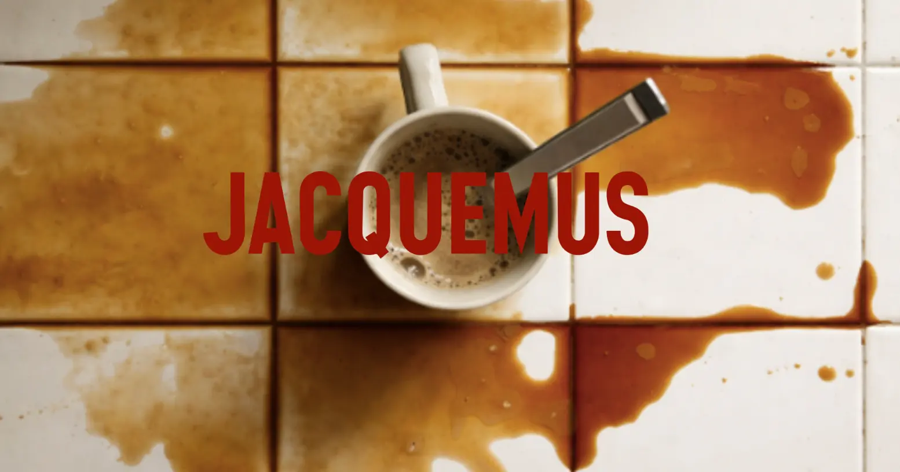
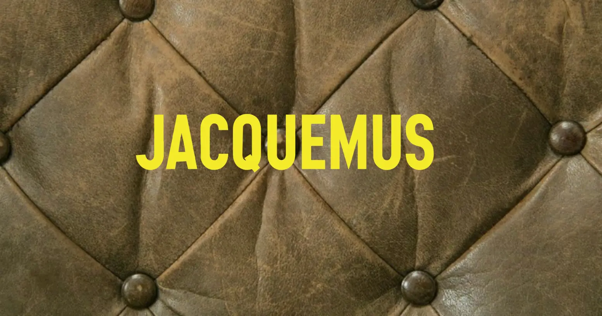
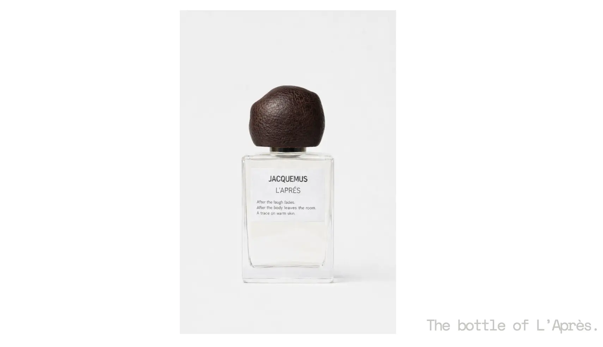

01 · Academic concept
L’Après
Jacquemus fragrance campaign
A fragrance concept built around what remains after someone leaves: warmth in a room, a familiar trace and the quiet persistence of memory. The campaign translates an intimate emotional territory into product, image, film, print and retail touchpoints.
My roleStrategy, storytelling, copywriting and art direction
DeliverablesFragrance concept, visual language and integrated campaign
Skills shownEmotional branding, creative direction and channel planning


